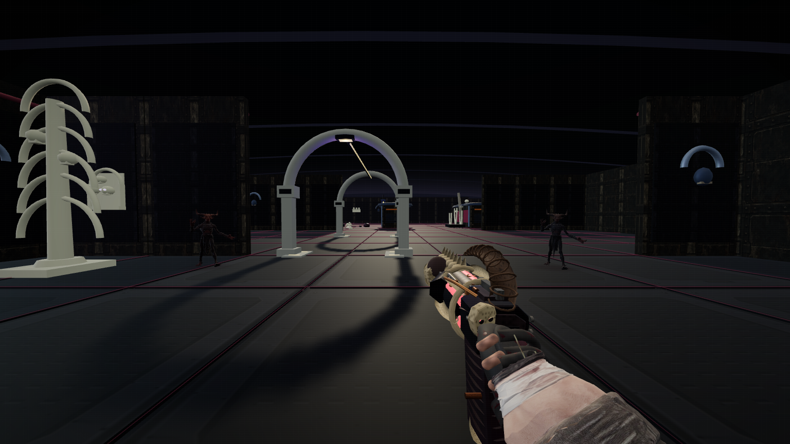
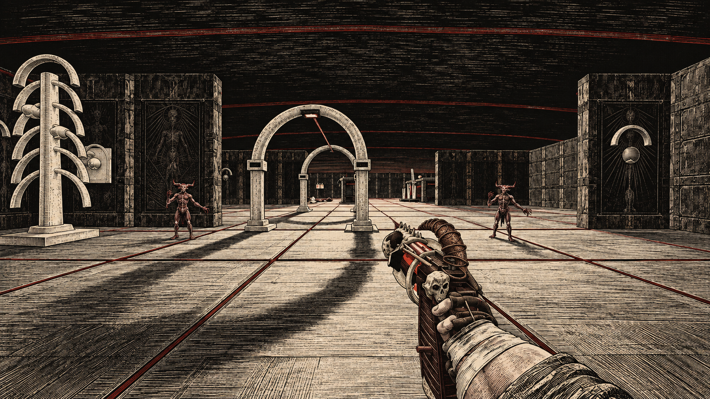

The Last Dead / Art direction studies / 01
One scene.
Seven possible worlds.
Seven ImageGen concept paintovers of a fresh Catacombs gameplay capture. The same room, enemies and weapon, interpreted through different materials and mark-making. These are visual proposals; they are not implemented game renders.
01Anatomical woodcut


ImageGen concept / 01Original / concept
← → browse · 1–7 select · O original · F shortlistNew direction: The Further — film references & art notes
The newest film is Insidious: Out of the Further (2026). These official Sony stills show the cold portable lighting and ordinary interiors that informed study 07. They are film references, separate from the game concept.


Our proposed game direction: uncertain depth, figures that wait almost motionless, faces revealed at the edge of light, and quiet traversal between combat. Research notes · Exact ImageGen prompt · Official stills gallery